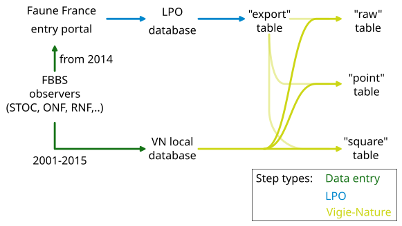

STOC EPS
L’objectif est de suivre les populations d’oiseaux communs sur des carrés répartis aléatoirement. Dans chaque carré, sont notés tous les oiseaux vus ou entendus pendant 5 minutes sur 10 points d’écoute visités 1 à 3 fois par an.
Protocole et saisie
Sur un carré de 2x2km tiré aléatoirement proche d’une commune donnée, les observateur.ice.s placent 10 points d’écoute dans des habitats représentatifs des habitats du carré. Un à trois passages sont effectués chaque année, le plus possible aux mêmes dates parmi trois périodes: mars, avril/début mai, mi-mai/mi-juin. A chaque passage, les observateur.ice.s parcourent les 10 points toujours dans le même ordre, entre 1h et 4h après le lever du soleil. A chaque point d’écoute, pendant 5 minutes, tous les oiseaux contactés, c’est à dire vus ou entendus, sont notés dans cinq classes de distances et l’habitat du point est noté selon une classification hiérarchique.
Depuis 2016, les données sont saisies sur Faune-France et versées dans une base de données LPO: les points sont géolocalisés sur Biolovision, leurs coordonnées sont fixes d’année en année.
Avant 2001, les carrés n’étaient pas tirés aléatoirement. Ces données historiques ne sont pas incluses dans les exports.
A partir de 2001, les données saisies étaient stockées à Vigie Nature. La saisie des coordonnées GPS des points n’était pas systématique, les coordonnées GPS fixes sont celles des carrés.
Période de tuilage entre 2014 et 2016 où les données étaient versées à VN et à la LPO, début de la saisie systématique des coordonnées des points.
Le passage de mars est optionnel depuis 2011 et fortement encouragé depuis 2022/2023.
Les données d’information météorologiques, saisies au début du protocole, ne sont plus demandées.
Structures de données
Trois niveaux d’export de données sont disponibles selon les analyses prévues, par niveau d’aggrégation de données décroissant:
- données “au carré”: par année et par carré, une valeur d’abondance par espèce contactée
- données “au point”: par année et par point, une valeur d’abondance par espèce contactée
- données “brutes” : par année, par point et par passage, une valeur d’abondance par espèce contactée dans chaque classe de distance
Ces exports sont construits indépendamment, à partir de la base VN (données 2001-2015) et de la base LPO (données 2016 et plus).
L’export au carré est le plus utilisé et filtré. Il sert notamment au calcul des indicateurs PECBMS avec TRIM (fait par l’EBCC) ainsi qu’au calcul des indicateurs STOC avec la routine de calcul à VN.
| Nom du champ | Description | Format attendu1 |
|---|---|---|
site |
Identifiant unique du carré | string, six chiffres |
species |
Code CRBPO de l’espèce | string, six lettres majuscules |
num_dep |
Département du carré | string, deux chiffres |
abondance |
abondance de l’(espèce, carré, année) | nombre |
year |
Année | nombre entre 2001 et 2025 inclus |
longitude |
Longitude (WGS84) du carré | nombre à virgule (format US) |
latitude |
Latitude (WGS84) du carré | nombre à virgule (format US) |
passage |
Nombre de passages2 | string2 |
1: la vérification de la conformité au format est inégalement implémentée selon les champs concernés
2: variable catégorielle décrivant les passsages effectués pour le (carré, année)
only_{1|2|prec}: seulement le passage 1 (avril/mai), 2 (mai/juin) ou précoce (mars)1_2,prec_1,prec_2: deux passages ont été effectués, les numéros détaillent lesquels exactement1_2_3: les trois passages ont été effectués
| Nom du champ | Description | Format attendu |
|---|---|---|
carre |
Identifiant unique du carré | string, six chiffres |
point |
Identifiant du point au sein du carré | string, deux chiffres de 01 à 10 |
code_espece |
Code CRBPO de l’espèce | string, six lettres majuscules |
abondance |
abondance de l’(espèce, point, année) | nombre |
annee |
Année | nombre entre 2001 et 2025 |
longitude |
Longitude (WGS84) du point2 | nombre à virgule (format US) |
latitude |
Latitude (WGS84) du point2 | nombre à virgule (format US) |
habitat |
Code de l’habitat principal du (point, année) | string de deux caractères, format "[A-E][1-9]" |
passage |
Nombre de passages3 | string3 |
1: la vérification de la conformité au format est inégalement implémentée selon les champs concernés
2: ⚠️ Avant 2014, les coordonnées des points sont soit non renseignées soit variables entre années. Utilisation possible, mais avec une attention accrue.
3: variable catégorielle décrivant les passsages effectués pour le (carré, année)
only_{1|2|prec}: seulement le passage 1 (avril/mai), 2 (mai/juin) ou précoce (mars)1_2,prec_1,prec_2: deux passages ont été effectués, les numéros détaillent lesquels exactement1_2_3: les trois passages ont été effectués
| Nom du champ | Description | Format attendu 1 |
|---|---|---|
carre |
Identifiant unique du carré | string, six chiffres |
point |
Identifiant du point au sein du carré | string, six chiffres puis “P” puis deux chiffres de 01 à 10 |
espece |
Code CRBPO de l’espèce | string, six lettres majuscules |
date |
Date de la session | string, AAAA-MM-JJ |
annee |
Année | nombre entre 2001 et 2025 |
abondance |
nombre d’individus notés pour l’(espèce, point, annee, passage, classe de distance) | nombre |
distance_contact |
classe de distance de l’observation | string2 |
habitat |
Code de l’habitat principal du (point, année) | string de deux caractères, format "[A-E][1-9]" |
etude |
Programme de suivi associé à l’observateur | string, STOC_EPS ou STOC_ONF |
longitude |
Longitude (WGS84) du point3 | nombre à virgule (format US) |
latitude |
Latitude (WGS84) du point3 | nombre à virgule (format US) |
passage_calcule |
Passage attribué à la date de la session4 | string; 1, 2, precoce ou hors_protocole |
date_retenue |
Est-ce que la date de cette ligne est retenue pour le (carre, passage) ? | OK |
observateur |
Nom de l’observateur ou observatrice | string |
email |
Email chiffré de l’observateur ou observatrice | unknown |
1: la vérification de la conformité au format est inégalement implémentée selon les champs concernés
2: inf_25m, 25-100m, sup_100m ou transit. Attention: des espèces (rapaces, hirondelles, martinets) sont vues quasiment exclusivement en transit.
3: ⚠️ Avant 2014, les coordonnées des points sont soit non renseignées soit variables entre années. Utilisation possible, mais avec une attention accrue.
4: ⚠️ Attention aux migrateurs partiels pour lesquels l’information n’est pas la même entre le passage précoce et le passage 2 (a priori ces observations ne font pas partie des mêmes populations)
Détails des exports
Ce paragraphe regroupe des notes sur les opérations effectuées pour produire les trois niveaux d’exports. Ces opérations sont lancées par des scripts SQL dans une base de données locale qui regroupe toutes les tables intermédiaires, qui ne sont pas toutes représentées sur la Figure Résumé du chemin des données depuis la saisie par les observateurs jusqu’au trois niveaux d’exports. pour éviter de la surcharger.

- a chaque (carre, date), le passage est attribué selon le jour de l’année (mars = précoce, avril/mai = 1, mai/juin = 2). Si deux sessions correspondent au meme passage, seule la date la plus tardive est gardée
- conversion des sous-espèces en code espèces et correction taxo pour SYLIBE
- à chaque (espece, point, annee, passage), l’abondance est la somme des abondances dans toutes les classes de distances autorisées pour l’espèce
- à chaque (espece, point, année), l’abondance est le maximum de l’abondance renseignée sur les passages autorisés pour l’espèce
1. Ingestion de l’export LPO dans une table de la base locale
prepa_import_lpo.sql, étape commune aux trois flèches VN transparentes sur la Figure Résumé du chemin des données depuis la saisie par les observateurs jusqu’au trois niveaux d’exports.. L’objectif est de préparer une table export_STOC_SHOC qui contient toutes les données transmises par la LPO. Cette étape d’ingestion contient des modifications de données et définitions de champs utiles aux étapes de filtres:
Identification des carrés: Le champ carre est fixé à 6 caractères, le champ point est fixé à deux caractères. Les carrés correspondant à des suivis de carrés choisis (donc par un échantillonage non aléatoire) sont identifiés par leur nom, le champ etude est modifié pour contenir STOC_EPS ou STOC_ONF pour les observations correspondant à un échantillonage aléatoire.
Dates: Le jour, mois, année et date complète de chaque observation est extrait dans des champs dédiés commençant par date.
Passages et nombre de points: A chaque date, le nombre de points visités est compté et le carré est flaggé si le nombre de points n’est pas 10. Le numéro du passage (1, 2 ou precoce) est attribué selon la date de visite dans un champ dédié, passage_calc. Si la date ne correspond pas aux dates du protocole ou si les dix points n’ont pas été visités, on note passage_calc: 'hors_protocole'.
Sous-espèces: Les sous-espèces renseignées sont regroupées à l’espèce en remplaçant les codes sous-espèces par les codes espèces correspondant. Par exemple, espece: "MOTFLAFLA" devient espece: "MOTFLA".
Codes habitats: Les codes habitats observateurs sont simplifiés, pour l’habitat principal et l’habitat secondaire. Le traitement est différent selon si l’observateur a saisi deux ou quatre caractères de classification. Pour un point de milieu principal “forêt de feuillus” et de milieu secondaire “culture de colza avec haies sans arbres”, PMilieu: A1 donne Milieu_principal: A; Type_principal: 1 et SMilieu: D426 donne Milieu_secondaire: D; Type_secondaire: 4
Filtre des passages: Pour certains carrés, plusieurs dates de visite correspondent au même passage. La date_retenue est notée OK pour la visite la plus tardive pour chaque passage et pas_OK pour les autres visites. Cela correspond à l’hypothèse que les observateurs qui reviennent sur leur carré pour le même passage le font car ils ne sont pas satisfaits des conditions d’observations à la première visite.
2. Filtres et modifications pour l’export “carré”
Dans prepa_data_stoc.sql, une table datacarre_2016_2026 est créee à partir de export_STOC_SHOC, et une table datacarre_2001_2015 est créée à partir de observation, une table en local dans la base regroupant les données saisies avant 2016.
Calcul des abondances: Les abondances par carré et par année (abondance) sont calculées pour chaque espèce. De manière générale, pour un carré, une année et une espèce, à un point donné, on somme les classes de distance sélectionnées pour chaque passage, et l’abondance au point est le maximum de ces sommes parmi les passages sélectionnées. L’abondance au carré est ensuite la somme des abondances des 10 points. Trois possibilités selon la liste d’espèces (de bas en haut dans le fichier .sql):
!= "transit" pour les données avant 2016 et not in '""', 'transit' après
| Espèces | Classes de distance séléctionnées | Passages sélectionnés |
|---|---|---|
| Espèces migratrices tardives | inf_25m, 25-100m, sup_100m1 | 2 uniquement |
| Espèces majoritairement détectées en vol | toutes | 1, 2 et precoce |
| toutes les autres | inf_25m, 25-100m, sup_100m1 | 1, 2 et precoce |
Dans les trois cas, comme passage_calc est utilisé pour identifier les passages, les données des visites hors dates du protocole ou des (carré, année) avec moins de dix points saisis ne sont pas utilisées.
Autres informations. Après le calcul des abondances, l’information des passages saisis est résumée dans une colonne passage. Ce calcul est fait par (carré, année), quelles que soient les espèces. Les coordonnées WGS84 des carrés sont ajoutés à la table.
Finalisation. Les données 2001-2015 et 2016+, rassemblées séparément jhusque là, sont filtrées pour les années qui leur correspondent et rassemblées dans la même table, datacarre.
La table countingdata, utilisée pour les calculs de tendances des espèces au carré, est basée sur datacarre avec des filtres supplémentaires:
- le code espèce doit correspondre à un oiseau de la table des codes espèces CRBPO
- l’espèce n’est pas une Espèces au suivi trop incertain pour les tendances
Listes d’espèces
Référence biblio possible à ce sujet: Princé et al. 2013
Espèces migratrices tardives
'MOTFLA','SAXRUB','ANTPRA','OENOEN','PHYTRO','TURPIL'
Espèces majoritairement détectées en vol
'AAPUAPU', 'HIRRUS', 'BUTBUT', 'DELURB', 'FALTIN', 'RIPRIP', 'MILMIG', 'PTYRUP', 'ACCNIS','FALSUB'
Espèces au suivi trop incertain pour les tendances
'FRIMON','TURILI','GRIVES','PHACAR','LARARG','LARMIC','TADTAD','AYTFER','TRIOCH','LARRID'